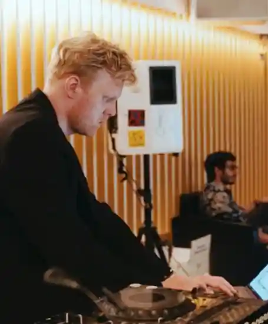
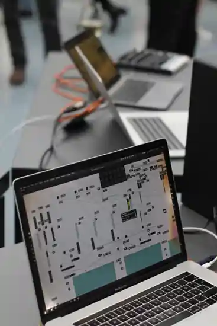
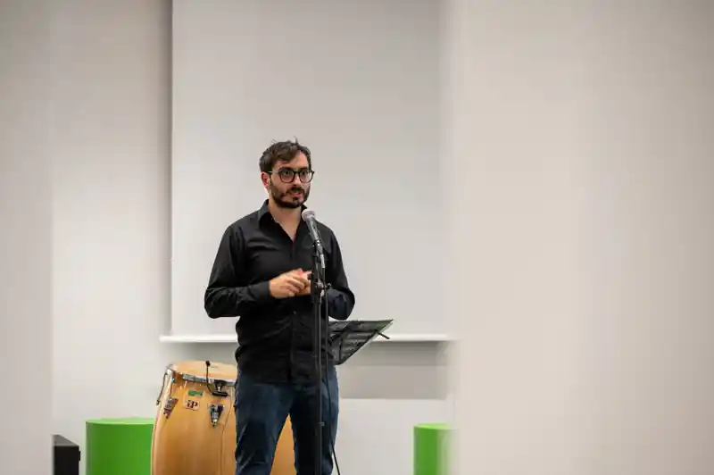

01
Distributed
performance
Distance, routing and temporal displacement become compositional parameters. The network is part of the score.
send~ roomreceive~ room
networked music · live electronics · transdigital practice
A collective for experimental work where performers, computers, rooms and networks become one instrument.
not a band. not a server. somewhere between.
NetSound Collective grew out of an experimental project initiated by Dmitrii Shchukin during his 2023–2024 assistantship at the Robert Schumann Hochschule Düsseldorf.
What began as a study-driven laptop ensemble developed into a platform for collaboration, research-oriented performance and public presentation. Each performer controls an individual sound source while remaining connected to a shared network in real time.
The setup is deliberately interdependent. Signals move between people, machines and rooms. A decision made at one point can reshape the whole system elsewhere.
The collective works with systems whose musical behaviour is produced by relations between participants rather than by a single central author.
Distance, routing and temporal displacement become compositional parameters. The network is part of the score.

Acoustic and digital sources respond to each other through processing, diffusion, routing and performative control.

Sound, code, image and performative presence are treated as one mutable field rather than separate media layers.
Selected fragments from rehearsals, performances and presentation contexts.


Performances, collaborations and distributed experiments since 2023.
Galerie Kunstpalast
Current positions between art and music
collaboration with Ensemble GARAGE
concert in intra-, inter- and metanet
experimental concert and collaborative format
NowNet Arts Conference · Western Hemisphere Network
collaborative live coding / electronic performance
A changing constellation of artistic positions across composition, sound, code, image and networked performance.
Audio-visual artist focused on critical reflection on technology, algorithms and their political implications; co-developer of browser-based real-time streaming and live-coding systems such as Gencaster.
↗Composer, Tonmeister and sound director, and artistic researcher at KreativInstitut.OWL, working with spatial audio, virtual environments and networked musical interaction.
↗Composer and violinist from Düsseldorf whose work connects composition, performance practice, electronics and the mediation of contemporary music.
↗Composer and media artist; initiator of the project from which NetSound Collective emerged during his assistantship at the Robert Schumann Hochschule Düsseldorf.
↗Performer and artistic collaborator in NetSound Collective’s networked and transmedial work, contributing to the ensemble’s shared performance ecology.
•The ensemble is open to collaborations with composers, performers, media artists and interdisciplinary projects. We are interested in work that treats interaction, improvisation and live processing as structural parts of the piece.
We especially welcome proposals that make specific use of the possibilities and limitations of a laptop ensemble rather than treating electronics as invisible accompaniment.
propose a project ↗Distance is not silence.
Latency is not failure.
A network can listen.
Düsseldorf
since 2023
local / distributed / online